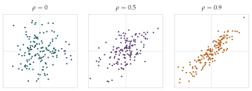

STEP III 2010，第 13 题
继续之前，请先阅读题目（原题为英文）。题目载于 STEP Support Programme 的题目资料库： step.maths.org/questions/10-s3-q13
引子
一间银行想知道，手上的股票投资组合（portfolio）有多大机会亏蚀。股价往往一起变动：一只股票下跌，其他股票也倾向跟着下跌。要模拟数以千计的可能未来，银行必须产生一批随机数，而这些随机数之间的相关程度要恰到好处。如果手上只有互相独立（independent）的随机变量（random variable），怎样才能制造出具有指定相关系数（correlation）的随机变量呢？
这道题就三个变量的情形，一步一步给出了配方。每个新变量都是先前各个独立材料的组合，再加上一份全新的独立材料，用来补足方差（variance）。这个构造其实是线性代数（linear algebra）中一个著名结果的化身，即科列斯基分解（Cholesky decomposition），它同时揭示了一个隐藏的限制：并非每一组相关系数都有可能出现。
协方差（covariance）和相关系数已于 2019 年从 STEP 的考试范围中删去。协方差是 \(\mathrm{Cov}(U, V) = \mathrm{E}(UV) - \mathrm{E}(U)\mathrm{E}(V)\)；独立变量的协方差为零，而且协方差对每个变元都是线性的：\(\mathrm{Cov}(aU + bV, W) = a\,\mathrm{Cov}(U, W) + b\,\mathrm{Cov}(V, W)\)。此外 \(\mathrm{Var}(U) = \mathrm{Cov}(U, U)\)。相关系数必定介乎 \(-1\) 与 \(1\) 之间。
动笔之前
\(Z_1\) 和 \(Z_2\) 互相独立。它们的协方差是多少？相关系数又是多少？
独立变量满足 \(\mathrm{E}(Z_1Z_2) = \mathrm{E}(Z_1)\,\mathrm{E}(Z_2)\)。所以协方差是 \(0\)，而 \(\mathrm{Corr}(Z_1, Z_2) = 0\)。
逐步解题
阶段 1 两个变量
\(\mathrm{E}(Y_2) = 0\)。由于 \(Z_1\) 和 \(Z_2\) 互相独立，方差均为 \(1\)， \[\mathrm{Var}(Y_2) = \rho_{12}^2 + (1 - \rho_{12}^2) = 1, \qquad \mathrm{Cov}(Y_1, Y_2) = \mathrm{Cov}\bigl(Z_1, \rho_{12}Z_1 + \sqrt{1 - \rho_{12}^2}\,Z_2\bigr) = \rho_{12}.\] 两个方差都是 \(1\)，所以 \(\mathrm{Corr}(Y_1, Y_2) = \rho_{12}\)。■
把 \(Z_1\) 和 \(Z_2\) 想像成互相垂直的单位向量。\(Y_2\) 在哪里？\(Y_1\) 与 \(Y_2\) 之间夹角的余弦是多少？
\(Y_2 = \rho_{12}Z_1 + \sqrt{1 - \rho_{12}^2}\,Z_2\) 是一个单位向量，与 \(Z_1 = Y_1\) 的夹角为 \(\theta\)，其中 \(\cos\theta = \rho_{12}\)。把变量看成向量，相关系数就是它们之间夹角的余弦（图 13.7.1）。
阶段 2 第三个变量
试以 \(a\)、\(b\)、\(c\) 写出 \(\mathrm{Var}(Y_3) = 1\)、\(\mathrm{Cov}(Y_1, Y_3) = \rho_{13}\)、\(\mathrm{Cov}(Y_2, Y_3) = \rho_{23}\) 这三个条件。
利用线性和独立性： \[a^2 + b^2 + c^2 = 1, \qquad a = \rho_{13}, \qquad \rho_{12}a + \sqrt{1 - \rho_{12}^2}\,b = \rho_{23}.\] 所以 \[a = \rho_{13}, \qquad b = \frac{\rho_{23} - \rho_{12}\rho_{13}}{\sqrt{1 - \rho_{12}^2}}, \qquad c = \sqrt{1 - \rho_{13}^2 - \frac{(\rho_{23} - \rho_{12}\rho_{13})^2}{1 - \rho_{12}^2}}. \qed\] （由于 \(c \geq 0\)，这里取非负平方根。）
阶段 3 任意的均值和方差
缩放和平移都不会改变相关系数，所以 \[X_i = \mu_i + \sigma_iY_i \qquad (i = 1, 2, 3)\] 的均值为 \(\mu_i\)，方差为 \(\sigma_i^2\)，相关系数为 \(\rho_{ij}\)。■
\(c\) 的公式要求平方根内的量非负。试取 \(\rho_{12} = \rho_{13} = \rho_{23} = -0.6\)。哪里出了问题？三个变量不可能两两之间都有很强的负相关，为甚么这是合理的？

回顾
每次只构造一个变量。每个新变量都从先前的材料中取用适当的份量，再加入一份全新的独立材料。
协方差是线性的。所有条件都化成了关于系数的简单方程。
相关系数是余弦。把标准化后的变量看成单位向量，相关系数就变成了夹角。
背后的数学
科列斯基分解
用矩阵形式来写，这个构造就是 \(\mathbf{Y} = L\mathbf{Z}\)，其中的矩阵是下三角（lower triangular）矩阵 \[L = \begin{pmatrix} 1 & 0 & 0 \\ \rho_{12} & \sqrt{1 - \rho_{12}^2} & 0 \\ a & b & c \end{pmatrix},\] 而 \(\mathbf{Y}\) 的相关矩阵（correlation matrix）是 \(R = LL^{\mathsf T}\)。把一个对称矩阵写成 \(LL^{\mathsf T}\) 的形式，就是科列斯基分解，由法国军事工程师科列斯基（André-Louis Cholesky）约于 1910 年发现，用来求解大地测量中的方程组（他在第一次世界大战中阵亡，这项成果在他身后才发表）。只要 \(R\) 是正定（positive definite）的，这个分解就行得通，而计算过程正是我们刚才用手做的：逐行求解。在金融、工程和气候模型中，这是模拟相关变量的标准方法。
哪些相关系数是可能的？
\(c\) 的平方根内的数必须非负。展开后，条件是 \[1 - \rho_{12}^2 - \rho_{13}^2 - \rho_{23}^2 + 2\rho_{12}\rho_{13}\rho_{23} \geq 0,\] 这正是相关矩阵的行列式（determinant）非负的条件。从几何上看：三个单位向量两两之间的夹角为 \(\theta_{ij}\)（其中 \(\cos\theta_{ij} = \rho_{ij}\)），它们必须真的能在空间中拼合起来。如果 \(\rho_{12} = \rho_{13} = \rho_{23} = -0.6\)，各个夹角都约为 \(127^\circ\)，而三个两两相隔 \(127^\circ\) 的向量，夹角之和就要超过 \(360^\circ\)：这是不可能的。一般而言，一个矩阵要成为相关矩阵，必须是半正定（positive semi-definite）的，即所有特征值（eigenvalue）均非负（第 7.2 节）。如果各个相关系数是根据不完整的数据分别估计出来的，这个条件就可能不成立，统计学家于是要找出最接近的有效相关矩阵，这个问题由 Nicholas Higham 在 2002 年解决。
高尔顿（Francis Galton）在 1888 年研究父母与子女身高的关系时引入了相关的概念，而皮尔逊（Karl Pearson）在 1896 年给出了本题所用的积矩（product moment）公式。高尔顿还注意到均值回归（regression to the mean）的现象（第 13.1 节）。皮尔逊于 1911 年在伦敦大学学院（University College London）创立了全世界第一个大学统计学系。“相关不等于因果”这句警告，几乎与相关系数本身一样古老。
思维技巧
要构造具有指定关系的对象，可以逐个加入，每一个都是先前各个对象的组合，再加上一些全新而独立的东西。
这是线性代数中的格拉姆–施密特（Gram–Schmidt）正交化过程倒过来做，也就是科列斯基分解。在大学里，它会出现在最小二乘法（least squares）、多元正态分布（multivariate normal distribution）的理论，以及随机过程的模拟之中。
延伸练习
不可能的相关系数。证明：除非 \(\rho \geq -\frac12\)，否则三个随机变量不可能两两之间的相关系数都是 \(\rho\)。对于 \(n\) 个变量，相应的结论是甚么？
检查行列式。证明 \(1 - \rho_{13}^2 - b^2 \geq 0\) 等价于 \(\det R \geq 0\)，其中 \(R\) 是 \(3 \times 3\) 相关矩阵。
投资组合的风险。两只股票回报的标准差（standard deviation）分别为 \(\sigma_1 = 0.2\) 和 \(\sigma_2 = 0.3\)，相关系数为 \(\rho\)。若投资组合中两只股票各占一半，求 \(\rho = -1\)、\(0\) 和 \(1\) 时该组合的标准差。分散投资达到了甚么效果？
还原材料。给定题目中的 \(Y_1\)、\(Y_2\)，试以 \(Y_1\) 和 \(Y_2\) 表示 \(Z_2\)。（这就是格拉姆–施密特过程中的一步。）
延伸阅读
Gilbert Strang, Introduction to Linear Algebra（Wellesley-Cambridge），讲述正定矩阵和科列斯基分解。
Paul Glasserman, Monte Carlo Methods in Financial Engineering（Springer）。讲述实际应用中如何模拟相关变量；内容较深，但开头几章不难读。
Theodore Porter, Karl Pearson: The Scientific Life in a Statistical Age（Princeton University Press）。